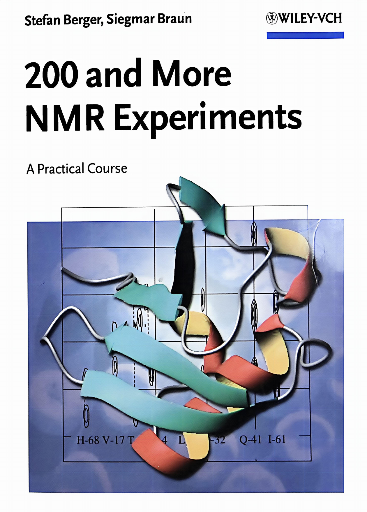

NMR EXPERIMENT HANDBOOK
核磁共振实验方法与脉冲序列手册
从仪器调谐、脉冲校准和常规一维谱，到多维相关、梯度技术、固体与蛋白质 NMR，系统汇集 200 余项实验方法、参数设置、谱图结果与实践注释。

BROWSE BY CHAPTER
按章节浏览实验
展开章节可查看其中的实验与原书页码。
第 1 章 The NMR Spectrometer 核磁共振波谱仪 13 页基础内容 · 原书 1–13
第 2 章 Determination of Pulse-Duration 脉冲宽度的测定 9 个实验 · 原书 14–42
概述
Determination of Pulse-Duration
原书 14–14
2.1
Determination of the 90° 1H Transmitter Pulse-Duration
原书 15–17
2.2
Determination of the 90° 13C Transmitter Pulse-Duration
原书 18–20
2.3
Determination of the 90° 1H Decoupler Pulse-Duration
原书 21–23
2.4
The 90° 1H Pulse with Inverse Spectrometer Configuration
原书 24–26
2.5
The 90° 13C Decoupler Pulse with Inverse Configuration
原书 27–29
2.6
Composite Pulses
原书 30–32
2.7
Radiation Damping
原书 33–35
2.8
Pulse and Receiver Phases
原书 36–38
2.9
Determination of Radiofrequency Power
原书 39–42
第 3 章 Routine NMR Spectroscopy and Standard Tests 常规核磁共振波谱与标准测试 14 个实验 · 原书 43–90
概述
Routine NMR Spectroscopy and Standard Tests
原书 43–43
3.1
The Standard 1H NMR Experiment
原书 44–48
3.2
The Standard 13C NMR Experiment
原书 49–53
3.3
The Application of Window Functions
原书 54–57
3.4
Computer-Aided Spectral Analysis
原书 58–60
3.5
Line Shape Test for 1H NMR Spectroscopy
原书 61–63
3.6
Resolution Test for 1H NMR Spectroscopy
原书 64–66
3.7
Sensitivity Test for 1H NMR Spectroscopy
原书 67–69
3.8
Line Shape Test for 13C NMR Spectroscopy
原书 70–72
3.9
ASTM Sensitivity Test for 13C NMR Spectroscopy
原书 73–75
3.10
Sensitivity Test for 13C NMR Spectroscopy
原书 76–78
3.11
Quadrature Image Test
原书 79–81
3.12
Dynamic Range Test for Signal Amplitudes
原书 82–84
3.13
13° Phase Stability Test
原书 85–87
3.14
Radiofrequency Field Homogeneity
原书 88–90
第 4 章 Decoupling Techniques 去耦技术 16 个实验 · 原书 91–139
概述
Decoupling Techniques
原书 91–91
4.1
Decoupler Calibration for Homonuclear Decoupling
原书 92–94
4.2
Decoupler Calibration for Heteronuclear Decoupling
原书 95–97
4.3
Low-Power Calibration for Heteronuclear Decoupling
原书 98–100
4.4
Homonuclear Decoupling
原书 101–103
4.5
Homonuclear Decoupling at Two Frequencies
原书 104–106
4.6
The Homonuclear SPT Experiment
原书 107–109
4.7
The Heteronuclear SPT Experiment
原书 110–112
4.8
The Basic Homonuclear NOE Difference Experiment
原书 113–115
4.9
1D Nuclear Overhauser Difference Spectroscopy
原书 116–118
4.10
1D NOE Spectroscopy with Multiple Selective Irradiation
原书 119–121
4.11
1H Off-Resonance Decoupled 13C NMR Spectra
原书 122–124
4.12
The Gated 1H-Decoupling Technique
原书 125–127
4.13
The Inverse Gated 1H-Decoupling Technique
原书 128–130
4.14
1H Single-Frequency Decoupling of 13C NMR Spectra
原书 131–133
4.15
1H Low-Power Decoupling of 13C NMR Spectra
原书 134–136
4.16
Measurement of the Heteronuclear Overhauser Effect
原书 137–139
第 5 章 Dynamic NMR Spectroscopy 动态核磁共振波谱 5 个实验 · 原书 140–158
概述
Dynamic NMR Spectroscopy
原书 140–140
5.1
Low-Temperature Calibration Using Methanol
原书 141–144
5.2
High-Temperature Calibration Using 1,2-Ethanediol
原书 145–148
5.3
Dynamic 1H NMR Spectroscopy on Dimethylformamide
原书 149–151
5.4
The Saturation Transfer Experiment
原书 152–154
5.5
Measurement of the Rotating-Frame Relaxation Time T1ρ
原书 155–158
第 6 章 1D Multipulse Sequences 一维多脉冲序列 19 个实验 · 原书 159–218
概述
1D Multipulse Sequences
原书 159–159
6.1
Measurement of the Spin–Lattice Relaxation Time T1
原书 160–163
6.2
Measurement of the Spin–Spin Relaxation Time T2
原书 164–166
6.3
13C NMR Spectra with SEFT
原书 167–169
6.4
13C NMR Spectra with APT
原书 170–172
6.5
The Basic INEPT Technique
原书 173–175
6.6
INEPT+
原书 176–178
6.7
Refocused INEPT
原书 179–181
6.8
Reverse INEPT
原书 182–184
6.9
DEPT-135
原书 185–187
6.10
Editing 13C NMR Spectra Using DEPT
原书 188–190
6.11
DEPTQ
原书 191–193
6.12
Multiplicity Determination Using PENDANT
原书 194–196
6.13
1D-INADEQUATE
原书 197–200
6.14
The BIRD Filter
原书 201–203
6.15
TANGO
原书 204–206
6.16
The Heteronuclear Double-Quantum Filter
原书 207–209
6.17
Purging with a Spin-Lock Pulse
原书 210–212
6.18
Water Suppression by Presaturation
原书 213–215
6.19
Water Suppression by the Jump-and-Return Method
原书 216–218
第 7 章 NMR Spectroscopy with Selective Pulses 选择性脉冲核磁共振波谱 12 个实验 · 原书 219–257
概述
NMR Spectroscopy with Selective Pulses
原书 219–219
7.1
Determination of a Shaped 90° 1H Transmitter Pulse
原书 220–222
7.2
Determination of a Shaped 90° 1H Decoupler Pulse
原书 223–225
7.3
Determination of a Shaped 90° 13C Decoupler Pulse
原书 226–228
7.4
Selective Excitation Using DANTE
原书 229–231
7.5
SELCOSY
原书 232–234
7.6
SELINCOR: Selective Inverse H,C Correlation via 1J(C,H)
原书 235–237
7.7
SELINQUATE
原书 238–241
7.8
Selective TOCSY
原书 242–245
7.9
INAPT
原书 246–248
7.10
Determination of Long-Range C,H Coupling Constants
原书 249–251
7.11
SELRESOLV
原书 252–254
7.12
SERF
原书 255–257
第 8 章 Auxiliary Reagents, Quantitative Determinations, and Reaction Mechanisms 辅助试剂、定量测定与反应机理 20 个实验 · 原书 258–323
概述
Auxiliary Reagents, Quantitative Determinations, and Reaction Mechanisms
原书 258–258
8.1
Signal Separation Using a Lanthanide Shift Reagent
原书 259–261
8.2
Signal Separation of Enantiomers Using a Chiral Shift Reagent
原书 262–264
8.3
Signal Separation of Enantiomers Using a Chiral Solvating Agent
原书 265–267
8.4
Determination of Enantiomeric Purity with Pirkle’s Reagent
原书 268–270
8.5
Determination of Enantiomeric Purity by ³¹P NMR
原书 271–273
8.6
Determination of Absolute Configuration by the Advanced Mosher Method
原书 274–276
8.7
Aromatic Solvent-Induced Shift (ASIS)
原书 277–279
8.8
NMR Spectroscopy of OH Protons and H/D Exchange
原书 280–282
8.9
Water Suppression Using an Exchange Reagent
原书 283–285
8.10
Isotope Effects on Chemical Shielding
原书 286–289
8.11
pKₐ Determination by ¹³C NMR
原书 290–292
8.12
Determination of Association Constants Kₐ
原书 293–297
8.13
Saturation Transfer Difference NMR
原书 298–301
8.14
The Relaxation Reagent Cr(acac)₃
原书 302–304
8.15
Determination of Paramagnetic Susceptibility by NMR
原书 305–307
8.16
¹H and ¹³C NMR of Paramagnetic Compounds
原书 308–311
8.17
The CIDNP Effect
原书 312–314
8.18
Quantitative ¹H NMR Spectroscopy: Determination of the Alcohol Content of Polish Vodka
原书 315–317
8.19
Quantitative 13C NMR Spectroscopy with Inverse Gated 1H-Decoupling
原书 318–320
8.20
NMR Using Liquid-Crystal Solvents
原书 321–323
第 9 章 Heteronuclear NMR Spectroscopy 异核核磁共振波谱 10 个实验 · 原书 324–361
概述
Heteronuclear NMR Spectroscopy
原书 324–329
9.1
1H-Decoupled 15N NMR Spectra Using DEPT
原书 330–332
9.2
1H-Coupled 15N NMR Spectra Using DEPT
原书 333–335
9.3
19F NMR Spectroscopy
原书 336–338
9.4
29Si NMR Spectroscopy Using DEPT
原书 339–341
9.5
29Si NMR Spectroscopy Using Spin-Lock Polarization
原书 342–345
9.6
119Sn NMR Spectroscopy
原书 346–348
9.7
2H NMR Spectroscopy
原书 349–351
9.8
11B NMR Spectroscopy
原书 352–354
9.9
17O NMR Spectroscopy Using RIDE
原书 355–357
9.10
47/49Ti NMR Spectroscopy Using ARING
原书 358–361
第 10 章 The Second Dimension 二维核磁共振 25 个实验 · 原书 362–452
概述
The Second Dimension
原书 362–366
10.1
2D J-Resolved ¹H NMR Spectroscopy
原书 367–369
10.2
2D J-Resolved ¹³C NMR Spectroscopy
原书 370–372
10.3
The Basic H,H-COSY Experiment
原书 373–376
10.4
Long-Range COSY
原书 377–379
10.5
Phase-Sensitive COSY
原书 380–382
10.6
Phase-Sensitive COSY-45
原书 383–385
10.7
E.COSY
原书 386–388
10.8
Double-Quantum-Filtered COSY with Presaturation
原书 389–392
10.9
Fully Coupled C,H Correlation (FUCOUP)
原书 393–395
10.10
C,H-Correlation by Polarization Transfer (HETCOR)
原书 396–398
10.11
Long-Range C,H-Correlation by Polarization Transfer
原书 399–401
10.12
C,H-Correlation via Long-Range Couplings (COLOC)
原书 402–404
10.13
The Basic HMQC Experiment
原书 405–408
10.14
Phase-Sensitive HMQC with BIRD Filter and GARP Decoupling
原书 409–411
10.15
Poor Man's Gradient HMQC
原书 412–414
10.16
Phase-Sensitive HMBC with BIRD Filter
原书 415–417
10.17
The Basic HSQC Experiment
原书 418–421
10.18
The HOHAHA or TOCSY Experiment
原书 422–425
10.19
HETLOC
原书 426–429
10.20
The NOESY Experiment
原书 430–433
10.21
The CAMELSPIN or ROESY Experiment
原书 434–437
10.22
The HOESY Experiment
原书 438–440
10.23
2D-INADEQUATE
原书 441–444
10.24
The EXSY Experiment
原书 445–447
10.25
X,Y-Correlation
原书 448–452
第 11 章 1D NMR Spectroscopy with Pulsed Field Gradients 采用脉冲场梯度的一维 NMR 波谱 21 个实验 · 原书 453–524
概述
1D NMR Spectroscopy with Pulsed Field Gradients
原书 453–454
11.1
Calibration of Pulsed Field Gradients
原书 455–457
11.2
Gradient Pre-emphasis
原书 458–460
11.3
Gradient Amplifier Test
原书 461–463
11.4
Determination of Pulsed Field Gradient Ring-Down Delays
原书 464–466
11.5
The Pulsed Field Gradient Spin-Echo Experiment
原书 467–469
11.6
Excitation Pattern of Selective Pulses
原书 470–473
11.7
The Gradient Heteronuclear Double-Quantum Filter
原书 474–476
11.8
The Gradient zz-Filter
原书 477–479
11.9
The Gradient-Selected Dual Step Low-Pass Filter
原书 480–483
11.10
gs-SELCOSY
原书 484–487
11.11
gs-SELTOCSY
原书 488–491
11.12
DPFGSE-NOE
原书 492–495
11.13
gs-SELINCOR
原书 496–498
11.14
α/β-SELINCOR-TOCSY
原书 499–502
11.15
GRECCO
原书 503–505
11.16
WATERGATE
原书 506–508
11.17
Water Suppression by Excitation Sculpting
原书 509–511
11.18
Solvent Suppression Using WET
原书 512–514
11.19
DOSY
原书 515–517
11.20
INEPT-DOSY
原书 518–520
11.21
DOSY-HMQC
原书 521–524
第 12 章 2D NMR Spectroscopy With Field Gradients 采用场梯度的二维 NMR 波谱 22 个实验 · 原书 525–615
概述
2D NMR Spectroscopy With Field Gradients
原书 525–525
12.1
gs-COSY
原书 526–529
12.2
Constant-Time COSY
原书 530–533
12.3
Phase-Sensitive gs-DQF-COSY
原书 534–537
12.4
gs-HMQC
原书 538–541
12.5
gs-HMBC
原书 542–545
12.6
ACCORD-HMBC
原书 546–549
12.7
HMSC
原书 550–553
12.8
Phase-Sensitive gs-HSQC with Sensitivity Enhancement
原书 554–557
12.9
Edited HSQC with Sensitivity Enhancement
原书 558–562
12.10
HSQC with Adiabatic Pulses for High-Field Instruments
原书 563–566
12.11
gs-TOCSY
原书 567–570
12.12
gs-HMQC-TOCSY
原书 571–574
12.13
gs-HETLOC
原书 575–580
12.14
gs-J-Resolved HMBC
原书 581–584
12.15
2D-HMBC
原书 585–588
12.16
¹H-Detected 2D INEPT-INADEQUATE
原书 589–592
12.17
1,1-ADEQUATE
原书 593–596
12.18
1,n-ADEQUATE
原书 597–600
12.19
gs-NOESY
原书 601–603
12.20
gs-HSQC-NOESY
原书 604–607
12.21
gs-HOESY
原书 608–611
12.22
¹H,¹⁵N Correlation with gs-HMQC
原书 612–615
第 13 章 The Third Dimension 三维核磁共振 4 个实验 · 原书 616–633
第 14 章 Solid-State NMR Spectroscopy 固体核磁共振波谱 9 个实验 · 原书 634–665
概述
Solid-State NMR Spectroscopy
原书 634–634
14.1
Shimming Solid-State Probe-Heads
原书 635–638
14.2
Adjusting the Magic Angle
原书 639–641
14.3
Hartmann-Hahn Matching
原书 642–644
14.4
The Basic CP/MAS Experiment
原书 645–648
14.5
TOSS
原书 649–652
14.6
SELTICS
原书 653–655
14.7
Connectivity Determination in the Solid State
原书 656–658
14.8
REDOR
原书 659–662
14.9
High-Resolution Magic-Angle Spinning
原书 663–665
第 15 章 Protein NMR 蛋白质核磁共振 20 个实验 · 原书 666–790
概述
Protein NMR
原书 666–669
15.1
Pulse Determination for Protein NMR
原书 670–672
15.2
HN-HSQC
原书 673–677
15.3
HC-HSQC
原书 678–681
15.4
MUSIC
原书 682–687
15.5
HN-Correlation using TROSY
原书 688–691
15.6
HN-TOCSY-HSQC
原书 692–697
15.7
HNCA
原书 698–704
15.8
HN(CO)CA
原书 705–710
15.9
HNCO
原书 711–717
15.10
HN(CA)CO
原书 718–724
15.11
HCACO
原书 725–731
15.12
HCCH-TOCSY
原书 732–738
15.13
CBCANH
原书 739–745
15.14
CBCA(CO)NH
原书 746–752
15.15
HBHA(CBCACO)NH
原书 753–759
15.16
HN(CA)NNH
原书 760–765
15.17
HN-NOESY-HSQC
原书 766–772
15.18
HC-NOESY-HSQC
原书 773–778
15.19
3D HCN-NOESY
原书 779–784
15.20
HNCA-J
原书 785–790
附录与索引 Appendices and Reference 附录与索引 6 个附录与索引部分 · 原书 791–838
A.1
Appendix 1: Pulse Programs
原书 791–793
A.2
Appendix 2: Instrument Dialects
原书 794–796
A.3
Appendix 3: Classification of Experiments
原书 797–798
A.4
Appendix 4: Elementary Product Operator Formalism Rules
原书 799–801
A.5
Appendix 5: Chemical Shift and Spin-Coupling Data
原书 802–803
A.6
Index and Glossary
原书 804–838